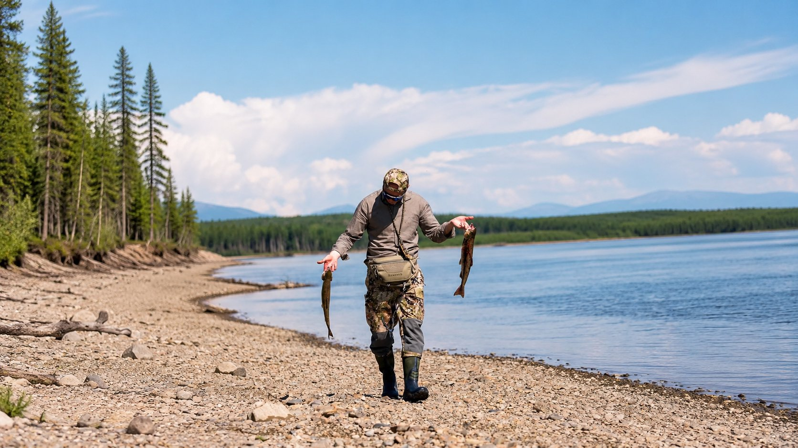
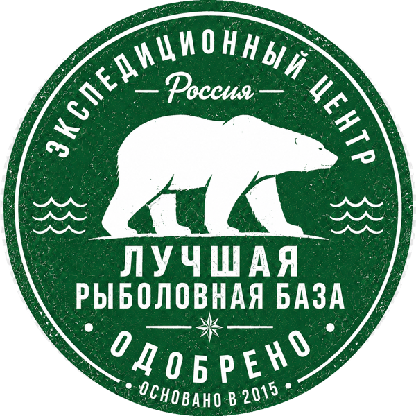

Июнь — Сентябрь
Хариус


59°47′32.61″ / 148°16′24.23″Магаданская область
Кавинка
Пароль в мир дикой природы

Рыболовная база в Кавинской долине, на берегу Тауя — там, где заканчиваются дороги.
Оставить заявку
от 150 000 ₽ / 7 дней